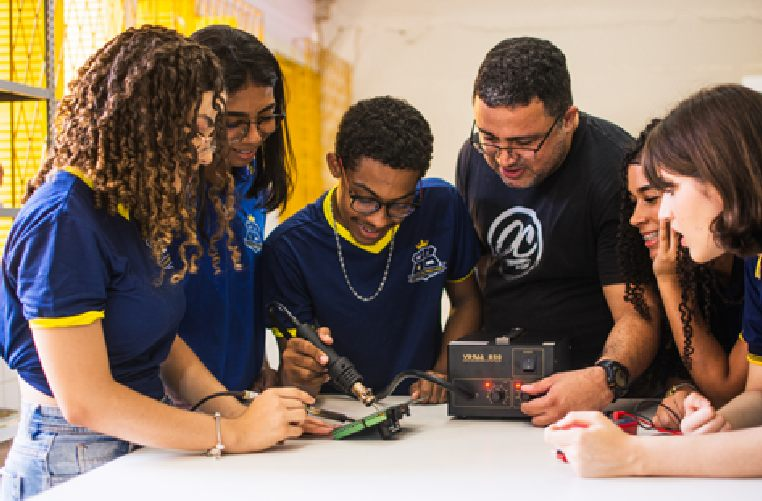
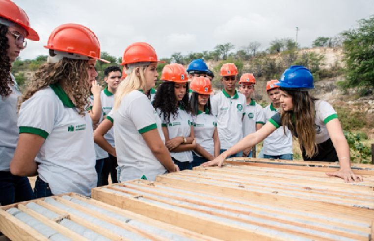
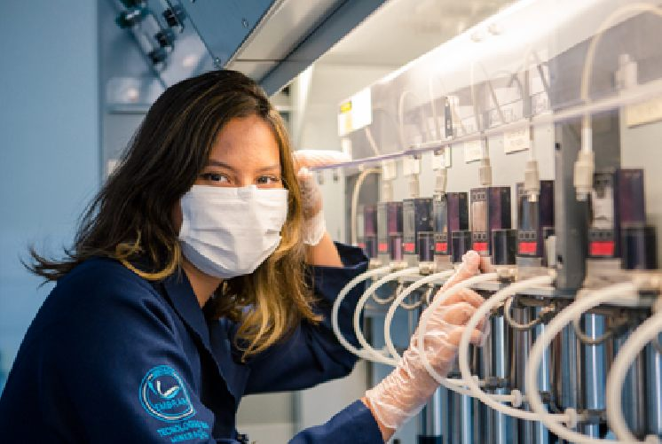

Rede Estadual de EPT em dados
Matrículas, aprovação, evasão, SAEB, IDEB e as visitas técnicas às escolas, em painéis interativos para quem faz e acompanha a Educação Profissional no RN.
Rio Grande do Norte · 2019–2026A EPT potiguar em números
São 145 instituições em 80 municípios, com 18 cursos técnicos: a rede praticamente triplicou a oferta desde 2019.
O maior ciclo de expansão da EPT na história do Rio Grande do Norte.
Matrículas de EPT por ano
Fontes: Censo Escolar/INEP (2019–2025) e revista “Rede Estadual de EPT: História, Saberes e Transformação” (2026) · SUEP/SEEC-RN.
Explore os dados
Filtre por DIREC, município, curso e escola. Cada painel abre aqui mesmo, sem precisar de login.
Nenhum painel encontrado para essa busca.
Por trás de cada número, um estudante aprendendo uma profissão
Laboratórios, aulas de campo, projetos integradores e estágios: é assim que a formação técnica acontece na rede estadual, da capital ao interior.
Conheça a rede →




Quem passou pela EPT conta
“O curso técnico impacta diretamente na sua vida — mas você tem de saber usar o que tem em mãos. Hoje, estou estudando e trabalhando na área.”
“Muita coisa que a gente vê no curso prepara a gente para o mundo do trabalho. Saímos preparados para aproveitar as próximas oportunidades que conquistamos.”
Acompanhe a SUEP no Instagram
Notícias, seminários, visitas técnicas e o dia a dia da Educação Profissional no RN.